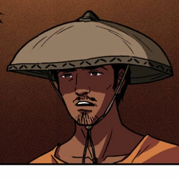
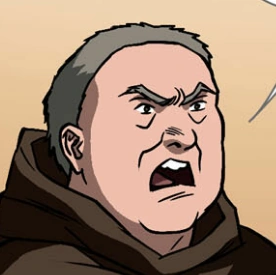
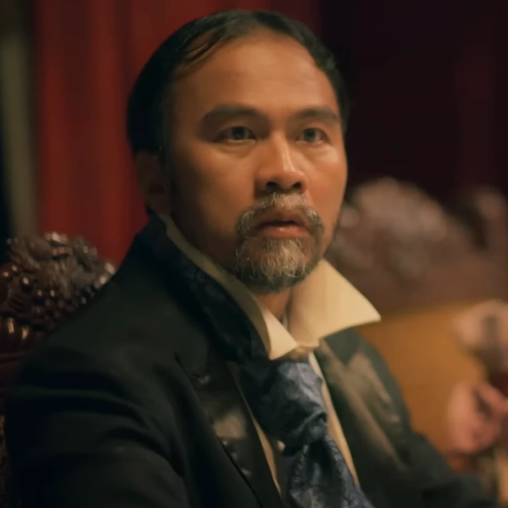

Noli Mi Tangere
| Characters of Noli Mi Tangere |
 |
Crisostomo Ibarra (Ibarra) |
- The son of Don Rafael
- He studied in Europe for 7 years
- He is the love of Maria Clara
|
 |
Maria Clara |
- The 'daughter' of Kapitan Tiago
- Raised by her Tiya Isabel after her mothers death
- Arranged marriage with Ibarra
|
|  |
Elias |
- A fugitive living in San Diego
- Was once part of a wealthy family but ran away
- Owes his life to Ibarra and continued to assist him until his death to the Guardia Civil
|
 |
Kapitan Tiago |
- The 'father' of Maria Clara
- Blinded by the Church
- Richest man in Binondo
|
|  |
Padre Damaso (Padre Garrote) |
- Former Friar of San Diego
- Ruthless, Violent, Corrupt
- Nicknamed Padre Garrote for his large stomach
|
 |
Padre Salvi (Moscamuerte) |
- Current Friar of San Diego
- Punishes people through fines
- Called Moscamuerte because of how sickly he is
|
 |
Don Rafael Ibarra |
- Father of Ibarra
- Close friends with Kapitan Tiago
- Part of the Ibarra Clan, richest people in San Diego
|
 |
Pilosopo Tasyo (Don Anastacio) |
- A so called Philosopher that to the uneducated, called a lunatic or 'Tasiong Baliw'
- He was given the choice whether to become a 'Saserdote' or leave the Colegio de San Jose
- Lost himself in vices like buying books
|
 |
Sisa |
- Mother of Basilio and Crispin, is abused by her husband
- Was arrested and sent to the Alferez' house where she would go insane due to maltreatment by Dona Consolacion
- Her insanity was manifested as wandering around calling out her children's names and suddenly singing
|
 |
Crispin |
- Youngest child of Sisa
- Worked as a Sacristan with his brother Basilio
- Was accused of stealing church offers and was punished by the head sacristan and Padre Salvi, presumed to be dead after being beat
|
 |
Basilio |
- Oldest child of Sisa
- He tried to run away with Basilio but Basilio was unable to escape the Sacristan
- Was assisted by Ibarra and Elias to bury his mother after chasing her through the forest
|
 |
Donya Victorina de Espadaña |
- Friend of Capitan Tiago
- She and her husband, Don Tiburcio, wanted to gain social status by being friends with influential figures in San Diego
- Placed on many airs to look like a Spaniard like pretending to be pregnant and saying that she will be heading to Spain to give birth
|
|  |
Don Tiburcio de Espadaña |
- A Quack Doctor married to Donya Victorina
- Is also friends with Capitan Tiago
- Capitan Tiago entrusted him with Maria Clara when she fell ill
|
 |
Donya Consolacion |
Former 'labandera'
Loves make-up
Married the Alferez
|
 |
Alperes |
Head of the Civil Guard
Is in a constant fight with Padre Salvi
Violent and Abusive
|
 |
Tiya Isabel |
- Raised Maria Clara
- Primary caretaker of Maria Clara
- She is the cousin of Kapitan Tiago
|
BACK TO THE TOP
{kind=link}
{kind=link}